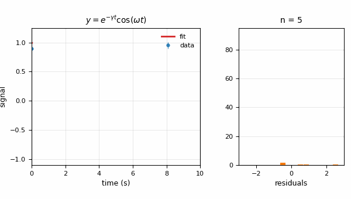

Open study material and articles — Git, Python, Jupyter and data science, from zero to research.
GitHub · Português
A hands-on course for people who have never coded or opened a terminal — from creating your account to pull requests.
11 modules
Medium · English
Install Python and Jupyter Notebook for your research ⏬
2 articles
Medium · English
Let's get to know a bit more about Python🐍 and Jupyter Notebook and how to use them! 😁👊🏾
5 articles

Medium · English
Short articles about libraries and techniques to help you on your research🔬
2 articles